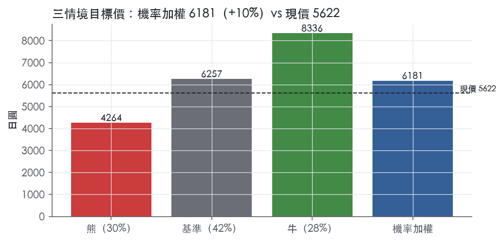
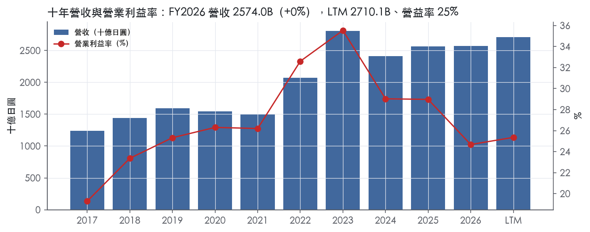
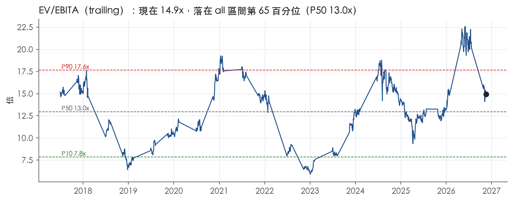
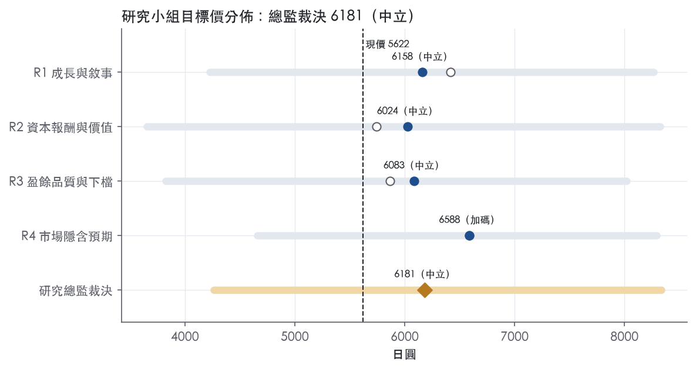
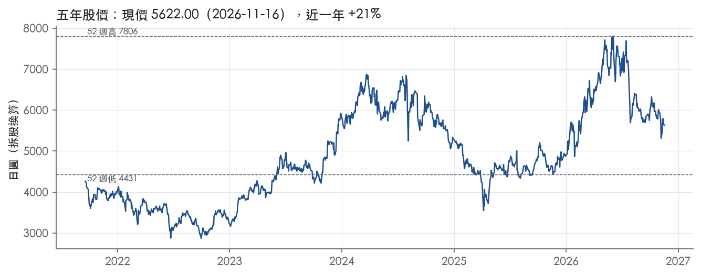

評等總表 › 未分類 › 4063.T
盈餘高於基準與計畫，倍數收斂，小幅看多｜評等 中立｜目標價 6181
| 報告日 | 評等 | 目標價 | 當時股價 | 超額報酬 |
|---|---|---|---|---|
| 2026-11-16 | 中立 | 6,181 | 5,622 | +3.4% |
| 評等 | 中立（邊界，鄰近加碼） |
| 12 個月目標價 | 6181 日圓 |
| 現價 | 5622.00 日圓（2026-11-16） |
| 預期報酬 | 股價 +9.9%＋股息 1.3%＝總報酬 +11.2%；日股門檻 7.8%，超額 +3.4% |
| 估值方法 | EV/EBITA 14.0x，套在未來四季的EBITA |
| 三情境 | 熊 4264／基準 6257／牛 8336 |
| 研究流程 | 四位研究員兩輪辯論＋研究總監裁決 |
| 資料來源 | EDINET、TDnet、J-Quants、Yahoo、FRED（全免費） |
盈餘高於基準與計畫，倍數收斂，小幅看多（研究總監裁決，四位研究員兩輪辯論後）
評等 中立（邊界，鄰近加碼）｜12 個月目標價 6181 日圓（總監三情境機率加權 6241 與研究員中位數 6120 各半）｜現價 5622.00（2026-11-16）
預期報酬：股價 +9.9%＋股息 1.3%＝總報酬 +11.2%。日股門檻 7.8%，超額 +3.4%，離加碼的分界不到三個百分點，屬邊界評等（落在其他級距的機率約四成）。
估值方法：EV/EBITA 14.0x，套在未來四季的EBITA。三情境：熊 4264（30%）／基準 6257（42%）／牛 8336（28%）。
立場看多而評等中立：評等看的是「預期總報酬 11.2% − 日股門檻 7.8%」＝超額 3.4%，不是絕對漲跌；看多但超額不足，代表上檔已被同業的預期報酬抵銷。
什麼會讓研究總監改變看法：FY2027Q3 電子材料分部營業利益年減或合併營益率低於 25.5%，我轉中性並把倍數降到 13x；Q3 上修全年營業利益到 750B 以上且 PVC 價格守住，我把倍數提到 14.5x 以上、明確加碼。
| 過去四季（實際，FY2027Q2） | 未來四季 | 第 5–8 季 | 第 9–12 季 | |
|---|---|---|---|---|
| 營收（B） | 2,710.1B | 2,926.9B | 3,093.5B | 3,279.1B |
| 營收成長 | 5.1% | 8.0% | 5.7% | 6.0% |
| 營業利益率 | 25.4% | 27.0% | 27.0% | 27.0% |
| EPS（日圓） | 271.38 | 334.37 | 359.93 | 388.59 |
| EPS 成長 | 5.1% | 23.2% | 7.6% | 8.0% |
| 每股股息（日圓） | — | 0.00 | 0.00 | 0.00 |
| P/E（現價） | 20.7x | 16.8x | 15.6x | 14.5x |
| 股息殖利率（現價） | 1.3% | — | — | — |
過去四季為申報數字；預測為研究總監的假設、程式計算。倍數與殖利率都用現價計算，用來看現價對應各期獲利的高低。
| 情境 | 機率（歷史） | 故事 | 未來四季營收成長 | 第 5–8 季營益率 | 倍數 | 目標價 | 股價漲跌 |
|---|---|---|---|---|---|---|---|
| 熊 | 30%（31%） | 本行下行路徑（美國 GDP 0.3、日圓 160）：風險表第 2 條 AI 資本支出反轉使漲價回吐、第 1 條 PVC 續弱疊加第 4 條中國過剩輸出，日圓 160 換算順風只撐住小幅營收成長，營益率回到 FY2026Q4 附近 | 2.0% | 22.0% | 12.0x | 4264 | -24.1% |
| 基準 | 42%（41%） | 電子材料兩位數成長、PVC 分部利益率持平於上半期、日圓 153，營益率守在上半期 27% 水準，倍數向中位收斂 | 8.0% | 27.0% | 14.0x | 6257 | 11.3% |
| 牛 | 28%（28%） | 本行上行路徑（美國成長 2.8、日圓 145）：AI 供給緊張延續、價格改定全面化、PVC 隨美國利率回落回升，Q3 上修計畫，市場重新評價回 52 週高點區間 | 12.0% | 29.5% | 17.0x | 8336 | 48.3% |
目標價由程式依研究總監的驅動與倍數計算；機率由研究總監給定。括號內是歷史頻率：把這檔股票過去十年 12 個月報酬的波動形狀，置中在基準情境，結果落在各情境附近的比例。

四位研究員用不同方法各自估值，回應研究總監的質疑後交出第二輪，最後由總監逐點裁決。各研究員的主張見第七章，裁決理由見第八章，完整論證見《研究底稿》。
| 立場（一輪→二輪） | 加權目標價（一輪→二輪） | 評等（一輪→二輪） | 第二輪倍數 | 熊～牛目標價 | |
|---|---|---|---|---|---|
| R1 成長與敘事 | 看多→看多 | 6414→6158 | 加碼→中立 | 14.0x | 4225～8265 |
| R2 資本報酬與價值 | 中性→中性 | 5741→6024 | 中立→中立 | 14.0x | 3655～8324 |
| R3 盈餘品質與下檔 | 中性→中性 | 5866→6083 | 中立→中立 | 14.5x | 3826～8018 |
| R4 市場隱含預期 | 看多→看多 | 6588→6588 | 加碼→加碼 | 14.5x | 4657～8292 |
| 研究總監裁決 | 看多 | 6181 | 中立 | 14.0x | 4264～8336 |
目標價由程式依各自的驅動與倍數計算；評等＝機率加權總報酬 − 日股門檻。
信越化學工業是以矽為核心的特殊材料製造商，產品線橫跨半導體矽晶圓到塑膠原料，客戶遍及半導體、電子、建築、醫藥等多個產業。公司自我定位為「以無可追隨的素材技術為社會與產業創造價值」的綜合先端電子材料廠商，特別強調要擴充支撐AI發展的功能。集團由信越化學本體、134家子公司及11家關聯公司構成（2026年3月31日現在），分工製造銷售並相互協力展開事業活動。公司明言AI基礎設施相關的事業機會將在全部事業部門中追求。FY2026（2026年3月期）合併營收2,573.97B日圓，過去十年營收規模擴張超過一倍，FY2017僅1,237.40B日圓。LTM（至FY2027Q2）營收已達2,710.13B日圓，顯示近期加速成長。
公司以四個報告分部運作，電子材料事業是最大且最賺錢的引擎，生活環境基盤材料事業仍是營收主力但利潤率對市況敏感，機能材料與加工・商事・技術服務則是規模較小但成長穩定的輔助分部。電子材料事業主要產品為半導體矽晶圓、稀土磁石、光阻劑（フォトレジスト）、光罩基板（マスクブランクス）、合成石英製品等，FY2026外部客戶銷售額1,015.76B，為四個分部中最大；該分部FY2026分部利益344.54B，較FY2025的324.76B成長。生活環境基盤材料事業以塩化ビニル樹脂（PVC）、か性ソーダ（氫氧化鈉）、甲醇、ポバール（PVA）為主，FY2026外部銷售額981.37B，分部利益則從FY2025的291.47B大幅下滑至164.89B，主因PVC市況轉弱。機能材料事業涵蓋シリコーン（有機硅）、セルロース誘導體、金屬矽等，FY2026外部銷售額440.85B，分部利益100.95B，與前期基本持平。加工・商事・技術サービス事業規模最小，FY2026外部銷售額135.99B，分部利益27.34B。地域別銷售資訊顯示FY2026日本549.94B、美國705.10B、其他地區1,318.93B，海外（主要是美國與亞洲）佔比明顯超過日本本土。10-K未揭露更細的終端市場（如記憶體vs.邏輯晶片）佔比。研發費用FY2026為77.82B，重點放在半導體關聯材料、高速通信、醫療保健及碳中和素材，EUV光阻與EUV光罩基板已進入量產，1.4nm以下製程材料是現在開發重心。資本支出FY2026合計339.71B，其中電子材料事業佔212.37B，主要用於信越半導体的晶圓高品質化與半導体曝光材料產能增設。
公司客戶高度分散，FY2025及FY2026兩期均無單一客戶占合併營收10%以上。地理上美國市場貢獻顯著，子公司Shintech（美國PVC廠）是集團內最重要的海外營運主體，單一公司FY2026銷售額達766.90B、稅前純益198.84B、淨資產2,004.09B、總資產2,269.85B，其銷售額占合併銷售額比重超過10%，是關係會社揭露中唯一達此門檻的公司。通路方面，公司透過直接銷售及區域子公司（如美國、歐洲、台灣、韓國、馬來西亞、泰國、中國的生產與銷售法人）貼近終端客戶，電子材料事業在台灣設有70%持股的台湾信越半導体，顯示對台灣半導體客戶群的重視。公司持有的政策保有股（交叉持股）正在縮減：FY2026上市股票（非上市股以外）帳列55.89B，本期間出售9個標的、合計取得價15.86B，公司明言「判斷無保有合理性者將依序出售、推進縮減」，這與東證要求改善資本效率、處分政策保有股的方向一致。
最近四季營收與獲利呈現加速成長、尤其電子材料事業受惠AI投資熱潮而顯著放量。FY2026Q3（2025年10-12月）合併營收649.48B日圓，年增-2.1%，淨利126.48B日圓（is.revenue、is.netincome FY2026Q3數據）。FY2026Q4（2026年1-3月）合併營收639.97B日圓，年增1.3%，淨利90.14B日圓，營益率降至21.4%（FY2026Q4資料包）。FY2027Q1（2026年4-6月）合併營收662.4B日圓（相當於662.4B），營業利益173.7B日圓。FY2027Q2（2026年7-9月，即最新一季）合併營收758.2B日圓（758.2B），較去年同期的655.9B日圓成長約16%；營業利益212.1B日圓，年增27%；經常利益222.9B日圓，年增20%。公司明言「今期7～9月的營業利益較去年同期增27%、經常利益增20%，事業的成長與業績的伸長將一段と力を注いでいく」。FY2027上半期（4-9月）合計：營收1,420.6B日圓（年增11%）、營業利益385.9B日圓（年增16%）、經常利益415.1B日圓（年增13%）、歸屬母公司純利286.9B日圓（年增11%）。分部表現上，電子材料事業上半年營業利益由170.6B日圓增至218.9B日圓、增幅達28%，公司指出AI相關的資料中心投資帶動半導體市場歷史性成長、部分產品線出現供給緊張，公司透過精緻供給調配與調價維持銷售成長。生活環境基盤材料事業上半年營業利益由102.3B日圓降至86.2B日圓、減少16%，公司說明5月後半亞洲及周邊地區PVC市場因庫存過多與需求鈍化而一度轉弱，7月才順利調漲價格，之後市況持平。機能材料事業上半年營業利益由48.1B日圓增至63.2B日圓、增幅31%，公司歸因於高附加價值品群銷售擴增。公司對FY2027全年計畫（業績予想）維持7月發布的數字：營收2,700.0B日圓、營業利益700.0B日圓、經常利益770.0B日圓、歸屬母公司純利525.0B日圓、EPS 286円，較FY2026實績（營收2,573.9B日圓、營業利益635.2B日圓、經常利益708.2B日圓、純利474.4B日圓、EPS 253円）分別成長5%、10%、9%、11%、13%。
公司將半導體市場成長列為首要引擎，指出半導體市場3年後預估達到年2兆日圓規模，電子材料事業要「確實掌握這一成長的諸策略之執行」。公司同時提出要「強化・擴充支撐AI經濟圈形成與進展所需的電子材料技術」以及「推進磁性材料的原料對策」。在機能材料領域，公司策略是加速「信越オリジナル」獨家矽化學產品上市，強化AI基礎設施建構所需的產品開發與供給體制，並發展製劑用セルロース（纖維素）製品。生活環境基盤材料事業則聚焦「價格水準的維持與適時調漲」以應對PVC市況波動。加工・商事・技術サービス事業的策略方向同樣扣緊AI基礎設施建構所需的技術開發與供給擴充。有價證券報告書層面，公司將經營基本方針定調為「飛躍成長的半導體產業所不可或缺的素材與技術」，並表示在AI進展支援功能上要全面擴充先端電子材料總合廠商的機能。公司目標的經營指標是「年度增收、增益」，並表示將加強各事業對市況波動的耐受性，應對中國過剩輸出對多個市場造成的壓力。整體看，信越是一家靠半導體與AI基礎設施結構性需求拉動電子材料分部、同時用傳統PVC現金流支撐資本開支與股東回報的雙速公司，電子材料目前是成長與利潤率雙升的主引擎、PVC是波動緩衝器。公司FY2027計畫隱含下半年營業利益年增率將明顯低於上半年（上半年已增16%、全年目標僅增10%），顯示公司對下半年PVC及磁性材料原料成本的保守假設，實際達成度值得後續追蹤、尤其日股公司慣性低估全年計畫的特性。股票交叉持股縮減與庫藏股買回動作（FY2027上半年自己股買入支出250.0B日圓）與東證資本效率要求的大方向一致，但政策保有股處分速度相對資產規模仍屬緩慢。

我們給信越化學「寬」護城河評級，依據是兩點：半導體材料的轉換成本與 PVC 的成本優勢都還在，而且 ROIC 在有資料的 9 年裡 9 年高於資本成本代理值。
趨勢判為「變窄」。ROIC 從 FY2023 的 29.9%連三年下滑，FY2026 降到 11.5%，這是十年最低，離 10.1% 的資本成本代理值已經不遠。
護城河來自三類：轉換成本、成本優勢、無形資產（製程技術）。網路效應與效率規模在材料中找不到證據，所以不列。
長期數字支持「寬」，但近三年的數字往反方向走。
支持的證據
衝突一：利潤率波動偏大
衝突二：ROIC 連續下滑
我們仍維持「寬」的三個理由
另外，FY2027Q2 營業利益率 28.0%、營收年增 15.6%（資料包 FY2027Q2），已出現回升訊號。
最大威脅是中國產能，其次是擴產回報不如預期。
目標倍數相對日本化學同業應給溢價：ROIC 9 年全數高於資本成本，且公司為淨現金（淨負債 -112.66B 日圓）。但溢價不宜再擴大：目前 P/E 20.7x 已高於自身 5 年中位數 18.2x，在 ROIC 止跌前，應以 5 年中位附近為基準，不宜給到 P90 的 24.9x。日本總經前提未見於本次材料，以上判斷假設日圓利率維持在 JGB 10 年 2.841附近，不會讓資本成本大幅上移。
| 指標 | 最新 | 十年平均 | 標準差 | 最低 | 最高 |
|---|---|---|---|---|---|
| ROIC | 11.5% | 18.1% | 5.2% | 11.5% | 29.9% |
| 毛利率 | 34.2% | 36.6% | 3.8% | 29.8% | 43.2% |
| 營業利益率 | 24.7% | 27.1% | 4.4% | 19.3% | 35.5% |
| FCF 利潤率 | 13.9% | 13.6% | 2.9% | 9.3% | 17.4% |
| ROE | 10.4% | 13.2% | 2.8% | 10.4% | 19.7% |
程式計算。資本成本代理值（10 年債＋5%）：10.1%；ROIC 平均減資本成本：8.0%；ROIC 有資料的 9 年中，高於資本成本 9 年。
LTM營業現金流／淨利為1.54x、近三年平均同為1.54x、十年平均1.37x，三個區間都在綠燈，顯示盈餘長期有現金支撐。FY2026全年營業活動現金流712.651B日圓，雖較前期減少169.283B日圓，仍遠高於當年淨利474.459B日圓，主因是稅前淨利708.488B日圓加回折舊242.973B日圓後，僅被法人稅支付208.932B日圓部分抵銷。FY2027上半期營業現金流410.757B日圓，較去年同期347.066B日圓增加，主因稅前中間純利益421,349M日圓與減價償却費115,787M日圓，法人税支払減少至98,051M日圓。應計比率LTM為-4.7%、近三年-5.1%、十年-3.4%，三項皆為負值且在綠燈門檻內，代表盈餘並未靠應計項目墊高，反而現金實現優於帳上淨利。FCF／淨利LTM為0.92x，近三年0.77x、十年0.68x，LTM達綠燈但近三年與十年仍低於0.90x門檻，反映資本支出周期中FCF對淨利的覆蓋率有波動，但方向是在改善。
決算短信本身未單獨列「調整後」非GAAP指標，公司以日本準則GAAP數字（營業利益、経常利益、純利益）直接作為溝通口徑。損益表中特別利益項目為投資有価証券売却益，FY2027上半期為6,240M日圓，FY2026同期為9,665M日圓，屬於非經常性的持有股票處分收益，不是本業獲利。現金流量表中的「為替差損益」調整項，FY2027上半期為6,876M日圓（損失方向加回），FY2026同期為-3,277M日圓（利益方向減除），屬匯兌評價性質、非現金性，不影響我對核心盈餘品質的判斷。整體而言，公司沒有大量使用股權薪酬或商譽攤銷等常見非GAAP灰色地帶調整項（SBC／營收欄位資料包無法計算，顯示為—），盈餘口徑相對乾淨。
淨負債為-112.66B日圓（即淨現金狀態），淨負債／EBITDA LTM為-0.12x、近三年-0.62x、十年-1.22x，全數在綠燈範圍，顯示公司幾乎無槓桿風險。利息保障倍數LTM為253.9x、近三年417.2x、十年522.5x，遠高於8x綠燈門檻，付息能力非問題。FY2026期末自己資本比率從82.6%降至78.7%，主因是股東還原（自己株式取得500.006B日圓及配当金支払203.162B日圓）超過當期淨利474.459B日圓，使淨資產合計較前期減少194.278B日圓。公司並以部分長期借入資金配合自己株式取得，使長期借入金自236,366M日圓增至397,437M日圓（FY2027上半期末）。FY2027上半期財務活動現金流續流出210,209M日圓，其中自己株式取得支出250,002M日圓、配当金支払98,405M日圓，部分以長期借入收入161,050M日圓補足。公司現金及現金同等物自期初562,089M日圓降至中間期末514,258M日圓，流動性仍充裕，加計定期存款及有價證券後流動資產中現金性資產合計達1,667.096B日圓。
（股利＋回購）／淨利 LTM 108.8%、近三年94.7%，十年平均53.3%——程式標為綠燈但已逼近或超過100%上限：FY2026全年自己株式取得500.006B日圓加配当金203.162B日圓，合計703.168B日圓，已超過當年淨利474.459B日圓，代表公司動用現金儲備（並部分舉借長期借入金）回饋股東。我認為這是真問題但非盈餘品質問題，而是資本配置政策：公司淨現金狀態下主動降低現金墊、呼應東證對PBR改善與資本效率的要求，不影響盈餘可信度，但會壓縮未來淨現金緩衝。
營業利益FY2026全年衰退14.4%（減少106.901B日圓）、FY2027上半期生活環境基盤材料營業利益衰退16%（減少16.1B日圓）——非計分表紅燈，但屬MD&A揭露的營運面轉差：公司說明主因「一部の製品で市況下落の影響」及塩化ビニル市況走弱，FY2027上半期則指出該事業受「在庫過多や需要鈍化」衝擊。這是循環性的大宗化學品定價問題，非盈餘品質造假或應計操縱，FY2027上半期電子材料與機能材料營業利益分別成長28%、31%已部分抵銷，判定為一次性產業周期波動。
稀釋股數年變動LTM -0.9%、近三年-2.6%——綠燈但幅度不算大：對應的是持續的自己株式取得（FY2026全年500.006B日圓、FY2027上半期再追加250.002B日圓），減少股數的效果真實存在，非口徑假警報。
FCF／淨利近三年0.77x、十年0.68x低於0.90x綠燈門檻：主因資本支出週期性偏高，FY2026資本支出／營收13.8%、FY2023高峰時僅10.7%（資料包年度表），FY2027上半期有形固定資産取得支出仍達169,121M日圓，屬半導體材料產能擴張的真實資本需求，非盈餘灌水，隨LTM已回升至0.92x可視為周期中段改善。
估值應以GAAP營業利益與淨利為主，公司未使用大量非GAAP調整項，兩者口徑一致，不需要額外打折。現金轉換與應計比率長期優於門檻，加上淨現金資產負債表幾乎不限制倍數使用空間，EV/EBITDA、P/E等trailing倍數可直接套用GAAP數字計算。唯一要留意的是股東回饋率已逼近或超過100%淨利，若化學品循環下行持續，淨現金緩衝會持續收窄，中期對FCF殖利率的假設應保守看待，但不影響當期盈餘品質評級。
| 項目 | LTM | 近三年 | 十年 | 燈號 | 規則 |
|---|---|---|---|---|---|
| 營業現金流／淨利 | 1.54x | 1.54x | 1.37x | 綠 | ≥1.00x 綠、<0.80x 紅 |
| 自由現金流／淨利 | 0.92x | 0.77x | 0.68x | 綠 | ≥0.90x 綠、<0.60x 紅 |
| 應計比率（(淨利−CFO)／平均總資產） | -4.7% | -5.1% | -3.4% | 綠 | ≤0.0% 綠、>5.0% 紅 |
| SBC／營收 | — | — | — | — | ≤3.0% 綠、>8.0% 紅 |
| 淨負債／EBITDA | -0.12x | -0.62x | -1.22x | 綠 | ≤1.50x 綠、>3.00x 紅 |
| 利息保障倍數（營業利益／利息） | 253.9x | 417.2x | 522.5x | 綠 | ≥8.00x 綠、<3.00x 紅 |
| 稀釋股數年變動 | -0.9% | -2.6% | -1.4% | 綠 | ≤0.0% 綠、>3.0% 紅 |
| （股利＋回購）／淨利 | 108.8% | 94.7% | 53.3% | 綠 | ≥50.0% 綠、<0.0% 紅 |
程式計算；燈號以 LTM（無則近三年平均）判定。
| 風險 | 觸發指標（看什麼數字、在哪裡看） | 對 EPS 的影響方向與粗略幅度 | 未來 12 個月發生機率（高／中／低） | 出處 |
|---|---|---|---|---|
| 1. PVC／氯鹼市況下行（生活環境基盤材料分部） | 每季決算短信「生活環境基盤材料」分部營業利益、PVC市場評論 | 負向・大：FY2027上半年該分部營業利益已從102.3B降至86.2B日圓（減16%） | 高 | |
| 2. 半導體／AI資本支出週期反轉（電子材料分部） | 電子材料分部營業利益、半導體設備投資公告、記憶體/邏輯客戶資本支出指引 | 負向・大：該分部為FY2026最大分部利益344.5B日圓（is.segment），上半年營業利益年增28% | 中 | |
| 3. 匯率（日圓兌日圓）劇烈升值 | usdjpy 即期匯率 vs. 公司決算短信內的「平均為替レートの推移」假設匯率 | 負向・中：海外銷售額比率79%，現行usdjpy 158.23已是高位，回落風險存在 | 中 | |
| 4. 中國過剩產能輸出壓低多個產品市場價格 | 公司PVC、基礎化學品分部的售價與市況評論；中國出口數據 | 負向・中（公司未給數字，方向判斷） | 中 | （依據有報「経営方針」提及應對中國過剩輸出） |
| 5. 原材料供應中斷或價格上漲（供應鏈） | 原材料採購成本、供應商通商政策變化公告 | 負向・小至中（公司未給量化數字） | 低 |
風險一：PVC／氯鹼市況循環，是目前最確定、影響最大的風險。公司在最新決算短信中親口承認，2026年5月後半亞洲及周邊地區PVC市場因庫存過多與需求鈍化一度轉弱，7月才順利調漲價格通過。結果是生活環境基盤材料事業FY2027上半年營業利益由102.3B日圓降至86.2B日圓，減少16%，是四個分部中唯一衰退的。往年度看，該分部曾在FY2024面臨市況急轉，拖累公司FY2024整體營收年減14.0%。公司的應對手段是「價格水準的維持與適時值上げ」，顯示其對市況的掌控力有限、只能被動跟漲。Shintech作為美國最大子公司（FY2026銷售額766.9B日圓、占合併銷售額超過10%）主要就是做PVC，若美國房市需求降溫，衝擊會直接反映在集團合併數字上。
風險二：電子材料分部的成長引擎同時是最大的集中風險。該分部FY2026分部利益344.5B日圓，是四個報告分部中最大，且FY2027上半年營業利益年增28%，公司明言成長動能來自「資料中心為中心的歷史性AI投資」。這是當前推升股價倍數（P/E 20.7x、trailing分位60.7%，band.pe現在分位）的核心敘事。但公司自己也點出「幾個產品群出現供給逼迫」，代表目前獲利含有漲價紅利，一旦AI相關資本支出週期見頂、半導體客戶轉為去庫存，漲價紅利會先消失、量也會跟著下滑。公司全年計畫隱含下半年營業利益年增率明顯低於上半年（上半年已增16%、全年目標僅增10%），顯示公司內部對下半年成長能否延續已趨保守。
風險三：日圓兌日圓匯率反轉。公司FY2026海外銷售額比率達79%，公司自承「在外連結子會社等的財務諸表項目的円換算額，受匯率左右，大幅變動時將對業績造成重大影響」。目前usdjpy為158.23（2026-11-06），處於歷史相對高位；若日圓轉弱（例如Fed降息路徑明確化），海外子公司換算回日圓的營收與利潤會縮水，且公司的外匯避險「無法保證完全規避風險」。
風險四：中國過剩產能輸出壓低市場價格。公司在經營方針中提到要應對「中國過剩輸出對多個市場造成的壓力」，但並未具體量化影響範圍或金額【判，依業務概況章轉述有報內容】。PVC、基礎化學品與部分電子材料中低階產品都可能受中國同業低價輸出衝擊，這與風險一的PVC市況弱勢可能同步發生、形成共振。
風險五：原材料供應中斷或通商政策變化。公司在有報風險因子中列出「資材等の調達」風險，承認原材料供應緊張、延遲、供應國通商政策變化及伴隨的價格上漲都可能對業績造成重大影響，但未提供具體原材料項目或金額暴露，僅為一般性免責聲明，實際發生機率與衝擊程度相對前四項更低、更分散。
庫藏股買回與配息大幅加碼（FY2027普通配當＋創立100週年記念配當合計上調至136円、配當性向47.6%）發生在公司全年計畫僅持平7月發布數字的背景下，若下半年PVC或電子材料獲利不如預期，股東回報的積極度與實際盈餘成長的落差可能被市場重新評價，形成倍數壓縮風險，而非單純盈餘風險。
政策保有股（交叉持股）處分速度遠慢於資產規模（FY2026僅出售9個標的、合計15.9B日圓，而上市股票帳列餘額仍有55.9B日圓），若東證對資本效率改善的要求升溫，公司可能被迫在非最佳時點加速處分，對損益表產生一次性波動（出售損益科目），且處分壓力本身反映公司治理與股東回報效率不如同業的結構性落後。
現價 5622.00 對應 trailing（過去四季）P/E 20.7x、EV/EBITDA 10.9x、EV/EBITA 14.7x、EV/Sales 3.7x、FCF 殖利率 4.6%。主要估值倍數 EV/EBITA 現在 14.9x，落在all區間第 65 百分位（P10／P50／P90 = 7.8x／13.0x／17.6x）。

把程式的機械基準預測放到現價下，市場付的前瞻倍數是：EV/EBITA（未來四季） 13.9x、P/E（未來四季） 18.2x、EV/EBITA（第 5–8 季） 13.2x、P/E（第 5–8 季） 16.9x。反推 DCF 顯示市價隱含未來五年營收年成長 8.9%（WACC 9.0%、終值成長 3.0%、FCF 利潤率 15.5%，SBC 不加回）。
| 倍數 | 現在 | all P10 | all P50 | all P90 | 現在分位 | 全期 P50 |
|---|---|---|---|---|---|---|
| P/E | 20.7x | 11.9x | 19.0x | 26.1x | 55.1% | 19.0x |
| EV/EBITDA | 11.0x | 6.2x | 9.8x | 13.2x | 63.9% | 9.8x |
| EV/EBITA | 14.9x | 7.8x | 13.0x | 17.6x | 64.9% | 13.0x |
| EV/EBIT | 14.9x | 7.8x | 13.0x | 17.6x | 64.9% | 13.0x |
| EV/Sales | 3.8x | 2.3x | 3.5x | 4.9x | 60.0% | 3.5x |
| P/S | 3.8x | 2.8x | 3.5x | 5.2x | 58.8% | 3.5x |
| P/FCF | 22.3x | 19.0x | 28.4x | 45.2x | 23.8% | 28.4x |
trailing 倍數（股價 ÷ 過去四季）；分位以每個交易日計算。
（日股同業籃尚未建置：評等門檻用日股絕對門檻＝日本 10 年公債＋股權風險溢酬 5%，見首頁。）
程式的機械基準（成長率從過去四季年增率三年收斂到 6%、利潤率持平）用 EV/EBITA all P50（trailing），套在 NTM 估值得到 5322（-5.3%），市場現行前瞻倍數（現價 ÷ 基準 未來四季指標）一年後持平，套在基準 第 5–8 季指標得到 6181。這兩個數字只是參考點，不是本報告的目標價；研究員對這個定價的回應在第七章。
下表是每位研究員第一輪（各自獨立）與第二輪（回應研究總監的質疑後）的結果。目標價全由程式依各自的假設計算。
| 立場（一輪→二輪） | 加權目標價（一輪→二輪） | 評等（一輪→二輪） | 第二輪倍數 | 熊～牛目標價 | |
|---|---|---|---|---|---|
| R1 成長與敘事 | 看多→看多 | 6414→6158 | 加碼→中立 | 14.0x | 4225～8265 |
| R2 資本報酬與價值 | 中性→中性 | 5741→6024 | 中立→中立 | 14.0x | 3655～8324 |
| R3 盈餘品質與下檔 | 中性→中性 | 5866→6083 | 中立→中立 | 14.5x | 3826～8018 |
| R4 市場隱含預期 | 看多→看多 | 6588→6588 | 加碼→加碼 | 14.5x | 4657～8292 |
| 研究總監裁決 | 看多 | 6181 | 中立 | 14.0x | 4264～8336 |
目標價由程式依各自的驅動與倍數計算；評等＝機率加權總報酬 − 日股門檻。
分歧度：第一輪 加權目標價 5741～6588（區間＝現價的 15%）· 倍數 13.5～15x · 立場 看多×2、中性×2；第二輪 加權目標價 6024～6588（區間＝現價的 10%）· 倍數 14～14.5x · 立場 看多×2、中性×2。

| 研究員 | 第二輪主張 | 堅持的理由 |
|---|---|---|
| R1 成長與敘事 | 看多，倍數 14x，營收成長 9%，高於公司計畫。 | 熊情境機率高於牛：PVC 不回升，牛情境只剩 AI 一條路。 |
| R2 資本報酬與價值 | 中性，倍數 14.0x，營益率逐年降到 25.5%。 | 供給緊張帶來的利潤會回歸，營益率不上修。 |
| R3 盈餘品質與下檔 | 中性，倍數 14.5x，營收成長只給 6%。 | 第二季含日圓換算、一次漲價和應收跳升，不能外推。 |
| R4 市場隱含預期 | 看多，倍數 14.5x，營益率三年持平 27.5%。 | 報酬全部來自盈餘高於基準，不靠倍數擴張。 |
每位研究員的逐條回應與完整論證見《研究底稿》（4063.T_研究底稿_2026-11-16.docx）。
| 分歧點 | R1 | R2 | R3 | R4 | 什麼資料會分出勝負 |
|---|---|---|---|---|---|
| NTM 營收成長 | 9%：Q2 run-rate、計畫保守 | 8%：高於計畫、不年化 Q2 | 6%：高基期、日圓 153、應收跳升 | 9%：已扣 153 逆風 | FY2027Q3 短信（2027-01 下旬）營收對 649.48B 的年增率；是否上修 2,700.0B 計畫；平均為替レート表 |
| 營益率 y1/y2/y3 | 26.5/27/27 | 26.5/26/25.5：緊缺利潤回歸 | 26.5/26/26：漲價不年化、折舊 | 27.5 持平 | Q3、Q4 營益率，Q4 是否重演 FY2026Q4 的 21.4%；電子材料分部利益率 |
| 目標倍數 | 14.0x：谷底分母效應消退 | 14.0x：ROIC 止跌、借款買回與 JGB 3.00 | 14.5x：y2 成長降檔 | 14.5x：PVC 中國風險未解 | 2027-11 的 trailing EV/EBITA 落點；電子材料利潤占比 |
| 股數／買回資金 | −1.5%：淨現金僅 −112.66B | −2.2%：借錢續買 | −2.2% | −2.2%：現金及び預金 1,751B | FY2027 下半期買回金額與長期借入金變動 |
| 熊情境深度與路徑 | y2 22%、12x、日圓 160；29% | 21%、11x、日圓 145；25% | 21%、11.5x、日圓 145；27% | 24%、12.5x；30% | 2027-11-16 實現報酬落區；日圓是否走本行 153 路徑 |
1. NTM 營收成長：R2 的 8%。 Q2 營收 758.26B、年增 15.6%，上半期 1,420.68B、年增 11%，公司仍維持 7 月的 2,700.0B 計畫；R3 核對後指出計畫隱含下半期營收低於去年下半期，四位都判定計畫保守，我同意。R3 的 6% 要 FY2028Q2 對 758.26B 的高基期持平到衰退，等於假設供給緊張與價格改定在四季內全部回吐；短信寫的是「いくつかの製品群で供給逼迫」、公司以「価格改定」擴大銷售，沒有回吐訊號，應收增加在營收同步成長下也不是獨立證據。R1／R4 的 9% 沒有完整扣掉本行日本前提「158.2→153.0，由順風轉約 3% 逆風」：海外銷售比率 79%，Q2 的 15.6% 含日圓走弱的換算順風，NTM 後半會反轉。本部營收預測誤差中位數 −0.7%（偏低），所以不往 R3 方向修。
2. 營益率：y1 取 own 27.0%，y2／y3 取 R1 的 27.0%。 錨是已實現數字：上半期營益率 27.2%、Q2 28.0%，且是在生活環境基盤材料分部利益從 102.3B 降到 86.2B、PVC 位於谷底時達成的。三份 26.5% 低於已實現上半期，而本部營業利益預測有系統性偏低（總監 −2.4%、R1 −2.8%、R2 −4.8%、R3 −3.3%），紀錄要求往反方向修；R4 是唯一不偏的來源（+0.2%），但 27.5% 高於上半期實績，沒留 Q4 季節性（FY2025Q4 25.0%、FY2026Q4 21.4%，對全年 29.0%、24.7% 都明顯偏低；／FY2026Q4／FY2025／FY2026）與日圓到 153 對日本產晶圓的利潤率壓縮。y2／y3 不再擴張：電子材料 FY2026 設備投資 212,366M的折舊逐年進損益，PVC 在中國過剩輸出下不假設回升。R2 的 25.5%／R3 的 26.0% 把「供給逼迫利潤回歸」放進基準，那是風險表第 2 條的機制，屬熊情境。R2 把 D&A 調到 9.5% 退回：R3 說得對，本模型營益率是直接輸入，調高 D&A 只會等額墊高 FCF；折舊壓力已由「營益率持平不擴張」承擔。
3. 目標倍數：14.0x，採 R1 的週期位置論證。 現行 trailing EV/EBITA 14.9x 在全期帶 64.9 分位、P50 13.0x、P90 17.6x（錨帶表）。這個分位是在 FY2026 營益率 24.7%、ROIC 11.5% 的谷底年形成的；依劇本的週期股備註，谷底盈餘配高分位倍數，盈餘回到中段時倍數向 P50 收斂。一年後的 LTM 營益率在我的假設下是 27%，接近十年中位，市場付的 trailing 倍數應低於現在；但電子材料已是最大利潤池（上半期分部營業利益 218.9B，四分部合計 385.9B），給 P50 之上約 1x 的組合溢價。交叉驗證：基準模型 13.0x 對應 P/E(NTM) 17.2x，14.0x 對應的 P/E 會落在自家 5 年 P50 18.2x附近，與護城河章「ROIC 止跌前以 5 年中位為基準」一致。R3 的 14.5x 唯一理由是 y2 成長 4%，我沿用基準 5.7%，理由消失；R4 的理由（PVC 中國風險）現價已反映，不是一年後倍數變低的機制；兩人實質是「持平減一點」，而本行總經前提對工業與原物料的指引是 2027 成長 1.8 低於共識、週期性訂單下修，我不給持平。R2 第三條（借款買回、JGB 3.00 推高借款成本）點出來：淨負債／EBITDA −0.12x、利息保障 253.9x（財務體質章），對 EV 倍數不構成風險，把 JGB 路徑塞進倍數是第 7 條禁止的利率重複計算，退回。
4. 股數：沿用基準 −2.2%（R4 的證據）。 R1 降到 −1.5% 的依據是淨現金只剩 −112.66B；R4 指出 2026-09-30 現金及び預金有 1,751,095M，資料包淨負債只納入部分現金。再加上公司上半期以長期借入 161,050M 配合 250,002M 買回、長期借入金自 236,366M 增至 397,437M，管理層選擇借錢續買，一年內 −2.2% 的資金不是瓶頸。R1 的缺口在他沒看到資產負債表。
5. 熊情境：取 R1。 R2、R3 的牛情境用日圓 160、熊情境用日圓 145，與本行日本前提的配對（上行＝145、下行＝160）相反，又未登記 macro_deviations，退回；R1 第二輪改為整組路徑，是唯一與前提一致的。深度與機率見下節。
漂移與總經偏離：程式未旗標任何人；R1 倍數 15→14、R2 13.5→14.0、R3 14.0→14.5 各對應我第一輪的 G3、V1、Q3 並附證據，不是向中位數靠攏，drift_rejections 為空。四位 macro_deviations 皆空，我接受的偏離為零；R2、R3 情境的匯率配對退回如上，R2 的 JGB 倍數理由已在第 3 點處理。想定為替レート（短信 p.19）未納入材料，R1、R3 都點出，列為待補。
與機械基準不同的驅動：
對公司計畫：公司 FY2027 營業利益 700.0B、營益率 25.9%；我的 NTM 營益率 27% 隱含 FY2027 實績明顯超過計畫（主張 2）。
目標倍數 EV/EBITA 14.0x，期間口徑 未來四季：資料包只有 trailing 帶、沒有前瞻帶，錨是 trailing 倍數套在一年後的 LTM（＝NTM）EBITA，對應的「倍數持平」參考是 14.9x（基準模型 6127），不是 13.9x 套 Q5–Q8 的 6181。14.0x＝全期 P50 13.0x＋約 1x 組合溢價，低於持平 6%。同業：日股同業籃未建置，門檻為日本 10 年公債 2.84%＋5% 股權風險溢酬＝7.8%。
機率：本檔置中分布左偏（P10 −35%／P90 +30%；≤−20% 的頻率 27% 對 ≥+20% 的 21%），程式對 R1 相近距離（+35%／−31%）給的歷史頻率是 27／41／31。我給 28／42／30，各項與歷史差距在 2 點內：牛多 1 點，根據是公司計畫明顯保守，Q3 短信（2027 年 1 月下旬）上修的機率高於下修；熊少 1 點，根據是本行一年內美國衰退機率 25% 低於歷史基準率 31%。熊略高於牛是這檔股票自身分布的形狀，不是沿用本部慣例；程式以我的基準重算後若順序翻轉，以程式頻率為準重排。
差在盈餘的利潤率，不在成長率、也不靠倍數擴張：反推 DCF 顯示市價隱含五年營收成長 8.9%（FCF 利潤率 15.5%），與我的 8%／5.7%／6% 相近；機械基準把 LTM 營益率 25.4% 持平，我以已實現的上半期 27.2% 為錨給 27%，NTM EBITA 因此高於基準，再把倍數從 14.9x 收斂到 14.0x，還回一部分。立場看多；若程式評等落在中立，原因是：程式股利按 LTM 持平（快照股息率 1.3%），而公司已宣告 FY2027 年間配当 136 円（普通 116 円），總報酬被低估約 1 個百分點；而且我的超額來自盈餘不靠倍數，幅度本就在門檻附近——這是「小幅看多、部位節制」，不是強烈看多。
主張 1 或 3 失敗、或 Q3 合併營益率低於 25.5%，我轉中性並把倍數降到 13x；Q3 上修全年營業利益到 750B 以上且 PVC 價格守住，我把倍數提到 14.5x 以上、明確加碼。
現價 5622.00 → 點估目標價 6257 → 機率加權目標價 6241 → 目標價 6181，差距拆成五段：成長順延 +505 日圓（市場現行倍數 14.9x 一年後持平、獲利照機械基準）；倍數差 -382 日圓（總監倍數 14.0x vs 市場持平倍數 14.9x，同一機械基準預測）；盈餘差 +513 日圓（總監預測的未來四季EBITA 790.3B vs 機械基準 724.3B，同一倍數）；情境不對稱 -16 日圓（機率加權減點估）；研究小組平均 -60 日圓（總監機率加權 6241 與研究員第二輪中位數 6120 各半）。各段相加等於目標價減現價。本階段未接賣方共識，差距以市場隱含預期為對照。
| 驅動 | 機械基準 | 研究總監 | 差異 |
|---|---|---|---|
| 未來四季營收成長 | 5.4% | 8.0% | +2.6 pp |
| 第 5–8 季營收成長 | 5.7% | 5.7% | ＝ |
| 第 9–12 季營收成長 | 6.0% | 6.0% | ＝ |
| 未來四季營益率 | 25.4% | 27.0% | +1.6 pp |
| 第 5–8 季營益率 | 25.4% | 27.0% | +1.6 pp |
| 第 9–12 季營益率 | 25.4% | 27.0% | +1.6 pp |
| D&A／營收 | 8.9% | 8.9% | ＝ |
| 資本支出／營收 | 11.5% | 13.5% | +2.0 pp |
| SBC／營收 | 0.0% | 0.0% | ＝ |
| 稅率 | 29.0% | 29.0% | ＝ |
| 股數年變動 | -2.2% | -2.2% | ＝ |
研究總監只寫偏移，未寫的沿用基準。
| 期 | 營收 | 成長 | 營益率 | 營業利益 | EBITDA | EBITA | 淨利 | EPS | FCF | 期末淨負債 |
|---|---|---|---|---|---|---|---|---|---|---|
| 未來四季 | 2,926.9B | 8.0% | 27.0% | 790.3B | 1,052.2B | 790.3B | 610.2B | 334.37 | 477.1B | -42.0B |
| 第 5–8 季 | 3,093.5B | 5.7% | 27.0% | 835.2B | 1,112.1B | 835.2B | 642.2B | 359.93 | 501.4B | 4.2B |
| 第 9–12 季 | 3,279.1B | 6.0% | 27.0% | 885.4B | 1,178.8B | 885.4B | 677.8B | 388.59 | 528.6B | 23.3B |
程式依上表的驅動計算；季度用最近四季季節性分攤；不含營運資金變動。
估值方法：EV/EBITA 14.0x，套在未來四季的EBITA。研究總監目標倍數的錨：自家 trailing EV/EBITA 全期 P50 13.0x 加約 1x 電子材料組合溢價；低於現行 14.9x 持平的理由是盈餘自 FY2026 谷底回到十年中位附近時 trailing 倍數向 P50 收斂，P/E 交叉驗證落在 5 年 P50 18.2x 附近。
計算：EBITA（未來四季） 790.3B × 14.0x＝EV 11,063.8B，減未來四季期末淨負債 -42.0B＝權益價值 11,105.9B，除以未來四季的股數 → 點估目標價 6257（11.3%）；隱含 P/E（未來四季）18.7x、P/E（第 5–8 季）17.4x、EV/EBITDA（第 5–8 季）9.9x、FCF 殖利率（第 5–8 季）4.5%。
總監三情境機率加權目標價 6241，研究員第二輪中位數 6120，兩者各半＝目標價 6181；預期報酬 股價 +9.9%＋股息 1.3%＝總報酬 +11.2%；減評等門檻 7.8%（日股絕對門檻 7.8%（日本 10 年公債 2.84%（2026-11-12）＋股權風險溢酬 5%；日股同業籃尚未建置））＝超額報酬 +3.4% → 評等 中立（超額 >+15% 買進、+5～+15% 加碼、±5% 中立、−5～−15% 減碼、<−15% 賣出）。同一份資料重開研究小組，超額約有正負四個百分點的雜訊（一個標準差，二十檔實測）；以此估計，評等落在其他級距的機率約四成。超額離加碼的分界不到三個百分點，應視為邊界評等。
| 情境 | 機率 | 未來四季成長 | 第 5–8 季成長 | 第 5–8 季營益率 | EBITA（未來四季） | 倍數 | 目標價 |
|---|---|---|---|---|---|---|---|
| 熊 | 30% | 2.0% | 2.0% | 22.0% | 635.8B | 12.0x | 4264 |
| 基準 | 42% | 8.0% | 5.7% | 27.0% | 790.3B | 14.0x | 6257 |
| 牛 | 28% | 12.0% | 11.0% | 29.5% | 865.1B | 17.0x | 8336 |
| 主張 | 驗證日 | 看哪個數字 | 門檻 |
|---|---|---|---|
| FY2027Q3 營收與營益率守住上半期水準 | 2027-02-15 | FY2027Q3 決算短信 營收、營業利益÷營收 | 營收 >= 700B 且營益率 >= 26.5% |
| FY2027 全年營業利益超過公司計畫 | 2027-05-15 | FY2027 決算短信 營業利益 | >= 740B（計畫 700.0B） |
| 電子材料分部全年營業利益續增 | 2027-05-15 | FY2027 決算短信 電子材料分部營業利益 | >= 430B（上半期 218.9B） |
| 一年後 trailing EV/EBITA 落在 P50 與現值之間 | 2027-11-16 | band.ev_ebita trailing 現值 | 13.0x–15.0x |
到期由程式結算（第 5 階段帳本）。
| 期 | 營收 | 成長 | 毛利率 | 營益率 | EBITDA | 淨利 | EPS | CFO | FCF | ROIC | 淨負債 | 稀釋股數 |
|---|---|---|---|---|---|---|---|---|---|---|---|---|
| FY2017 | 1,237.4B | — | 29.8% | 19.3% | 331.7B | 175.9B | 82.57 | 290.9B | 154.6B | — | -718.9B | 2.1B |
| FY2018 | 1,441.4B | 16.5% | 33.2% | 23.4% | 448.8B | 266.2B | 124.82 | 332.8B | 169.1B | 17.8% | -764.9B | 2.1B |
| FY2019 | 1,594.0B | 10.6% | 34.8% | 25.3% | 541.3B | 309.1B | 145.18 | 400.7B | 172.6B | 18.9% | -813.7B | 2.1B |
| FY2020 | 1,543.5B | -3.2% | 36.0% | 26.3% | 537.2B | 314.0B | 151.00 | 412.4B | 143.0B | 16.9% | -721.7B | 2.1B |
| FY2021 | 1,496.9B | -3.0% | 36.3% | 26.2% | 536.0B | 293.7B | 141.25 | 401.2B | 163.8B | 14.7% | -773.8B | 2.1B |
| FY2022 | 2,074.4B | 38.6% | 41.8% | 32.6% | 845.1B | 500.1B | 240.55 | 553.5B | 356.0B | 23.3% | -978.5B | 2.1B |
| FY2023 | 2,808.8B | 35.4% | 43.2% | 35.5% | 1,211.8B | 708.2B | 347.61 | 788.0B | 488.6B | 29.9% | -1,217.5B | 2.0B |
| FY2024 | 2,414.9B | -14.0% | 37.7% | 29.0% | 928.7B | 520.1B | 259.13 | 755.2B | 377.7B | 15.7% | -565.8B | 2.0B |
| FY2025 | 2,561.2B | 6.1% | 38.4% | 29.0% | 980.5B | 534.0B | 269.28 | 881.9B | 439.1B | 13.9% | -865.9B | 2.0B |
| FY2026 | 2,574.0B | 0.5% | 34.2% | 24.7% | 878.2B | 474.5B | 252.49 | 712.7B | 356.7B | 11.5% | -318.8B | 1.9B |
EDINET 有價證券報告書 XBRL（舊年度 US GAAP 公司只有經營指標摘要）；每股數據已依拆股換算到現在股數基準。EBITDA 空白＝該年沒有折舊攤銷（舊年度 US GAAP 公司的 EDINET 摘要沒有這一行）。
| 期 | 期末 | 推導 | 營收 | 毛利率 | 營益率 | EBITDA | 淨利 | EPS | CFO | FCF | 現金 | 總債務 |
|---|---|---|---|---|---|---|---|---|---|---|---|---|
| FY2024Q2 | 2023-09-30 | 596.7B | 40.8% | 32.0% | — | 147.8B | 73.46 | — | — | 785.5B | 28.2B | |
| FY2024Q3 | 2023-12-31 | 627.5B | 36.7% | 28.3% | — | 105.1B | 52.71 | — | — | — | 25.6B | |
| FY2024Q4 | 2024-03-31 | 591.5B | 33.2% | 23.9% | — | 113.6B | 56.90 | — | — | 590.1B | 24.3B | |
| FY2025Q2 | 2024-09-30 | — | — | — | — | — | — | — | — | 604.1B | 19.8B | |
| FY2025Q3 | 2024-12-31 | 663.2B | — | 26.9% | — | 138.4B | 69.85 | — | — | — | 19.8B | |
| FY2025Q4 | 2025-03-31 | 631.6B | — | 25.0% | — | 101.5B | 51.75 | — | — | 882.7B | 16.8B | |
| FY2026Q1 | 2025-06-30 | 628.5B | — | 26.5% | — | 126.4B | 66.45 | — | — | — | 16.8B | |
| FY2026Q2 | 2025-09-30 | 656.0B | — | 25.5% | — | 131.4B | 70.11 | — | — | 620.1B | 243.9B | |
| FY2026Q3 | 2025-12-31 | 649.5B | — | 25.3% | — | 126.5B | 67.42 | — | — | — | 243.9B | |
| FY2026Q4 | 2026-03-31 | 640.0B | — | 21.4% | — | 90.1B | 48.51 | — | — | 562.1B | 243.3B | |
| FY2027Q1 | 2026-06-30 | 662.4B | — | 26.2% | — | 130.8B | 70.24 | — | — | — | 243.3B | |
| FY2027Q2 | 2026-09-30 | 758.3B | — | 28.0% | — | 156.1B | 85.21 | — | — | 514.3B | 401.6B |
日本財報是年初至今的累計數：單季＝累計相減（Q2＝6 個月−3 個月、Q4＝年度−9 個月）；第 1、3 季多半不揭露現金流量表，單季現金流常空白，LTM 現金流用半年度拼。

本報告由 equity-desk 多代理系統產出，建置中版本，僅供內部研究與方法驗證，不構成投資建議。所有數字以 datapack.json 為準。